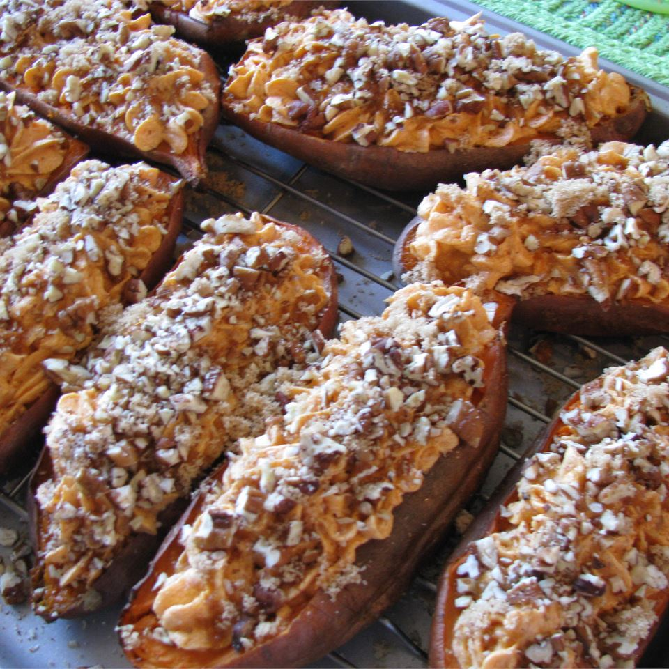

Home
Yummy Sweet Potato Casserole
My family begs me to make this creamy baked dish every Thanksgiving and
Christmas. What makes it so good is the pecan topping! Try it and I'm sure it
will become your new tradition!

Ingredients
- 4 cups sweet potato
- ½ cup white sugar
- 2 eggs
- beaten
- ½ teaspoon salt
- tablespoons butter
- ½ cup milk
- ½ teaspoon vanilla extract
- ½ cup packed brown sugar
- ⅓ cup all-purpose flour
- 3 tablespoons butter, softened
- ½ cup chopped pecans
Directions
- Instructions Checklist
- Step 1
- Preheat oven to 325 degrees F (165 degrees C). Put sweet potatoes in a
medium saucepan with water to cover. Cook over medium high heat until
tender; drain and mash.
- Step 2
- In a large bowl, mix together the sweet potatoes, white sugar, eggs,
salt, butter, milk and vanilla extract. Mix until smooth. Transfer to a
9x13 inch baking dish.
- Step 3
- In medium bowl, mix the brown sugar and flour. Cut in the butter until
the mixture is coarse. Stir in the pecans. Sprinkle the mixture over the
sweet potato mixture.
- Step 4
- Bake in the preheated oven 30 minutes, or until the topping is lightly
brown.
- Nutrition Facts
>Per Serving: 226 calories; protein 2.9g; carbohydrates 30.1g; fat 11.1g;
cholesterol 49.6mg; sodium 187.5mg.
Next Recipes